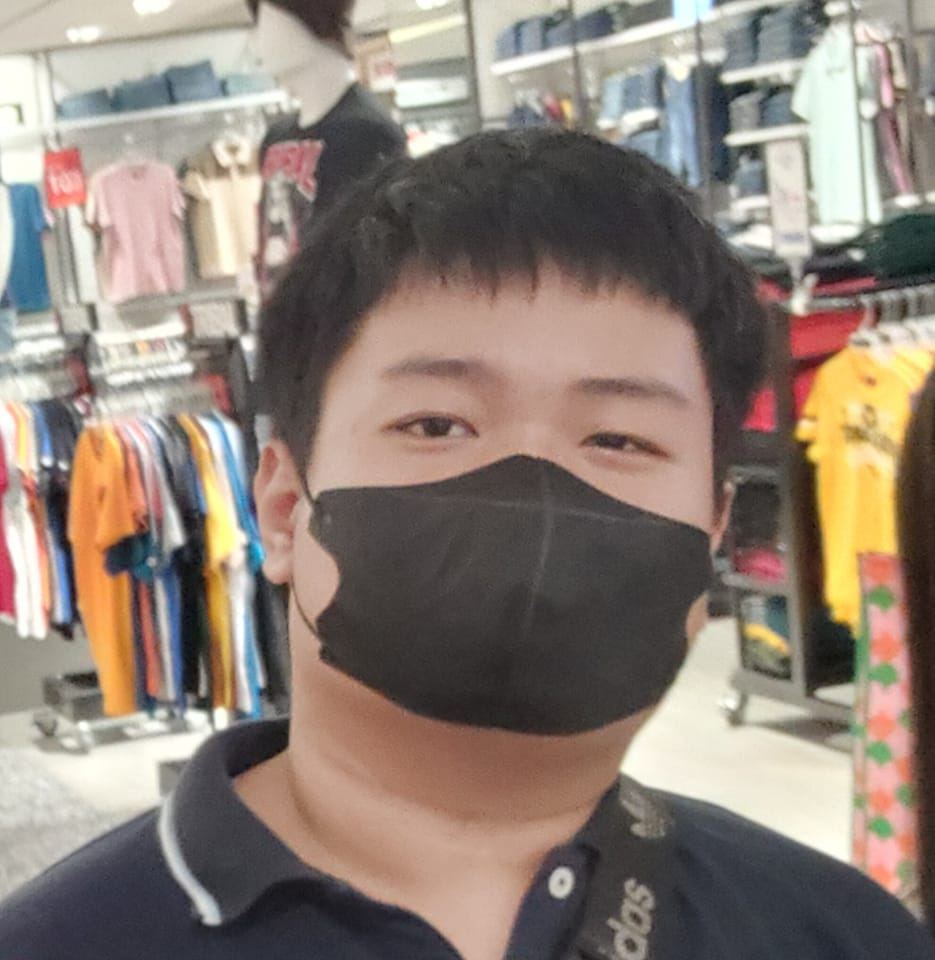

Hello welcome my website!
Hello everyone thank you for visiting my first website i know it is ugly or not looking for a good view and
hurts our eye is just normal website that i create for my college project so about
this project i need share my information my self family and talent and more so thank again.
My Website

PICTURE
My Information
Hello everyone thank you for visiting my first website i know it is ugly or not looking for a good view and hurts our eye is just normal website that i create for my college project so about this project i need share my information my self family and talent and more so thank again
You sent
Information of me
Hello I'm the owner of this website this website is only basic to other websites and about me I'm just a low IQ student college and i can tell you about me and if you really want more about me please click "click link to know more about visit Facebook..
Goals
For starters I still Don't have
What i want for my future yet is a hard decision so my different goal will be business to create a com shop.
Type student i am?
I am a college student from plp Pasig city i am 18 years old and my talent is building a part example robot part. I'm still having a low IQ so I need more learning to improve it.
My own Hobbies
some of my hobbiesare not related in my course and school because these hobbies are called other hobbies so i like creating robots like building it like a lego
And Video games that i like are my hobbies i have as of today of the year.
Skill/talent
My apologies i still don't know what is good at like what talent i able to use to and where can i use this skill and talent.
- Basic edition video
- Building part
- Basic edition presentation
And you want more and im sorry that i only know my self about my skill and talent.
Strength & weaknesses
The strength i have as a college student is half a great experience computer that i know and im half pretty good as strategy and i little supporting skill that i can tell my strength.
The Weakness i have difficulty communicates with other people and i have
symptoms called ADHD
Is like i still hype and easily distracted then i have one more i also have symptoms that hard to understand that all my weakness i know my self